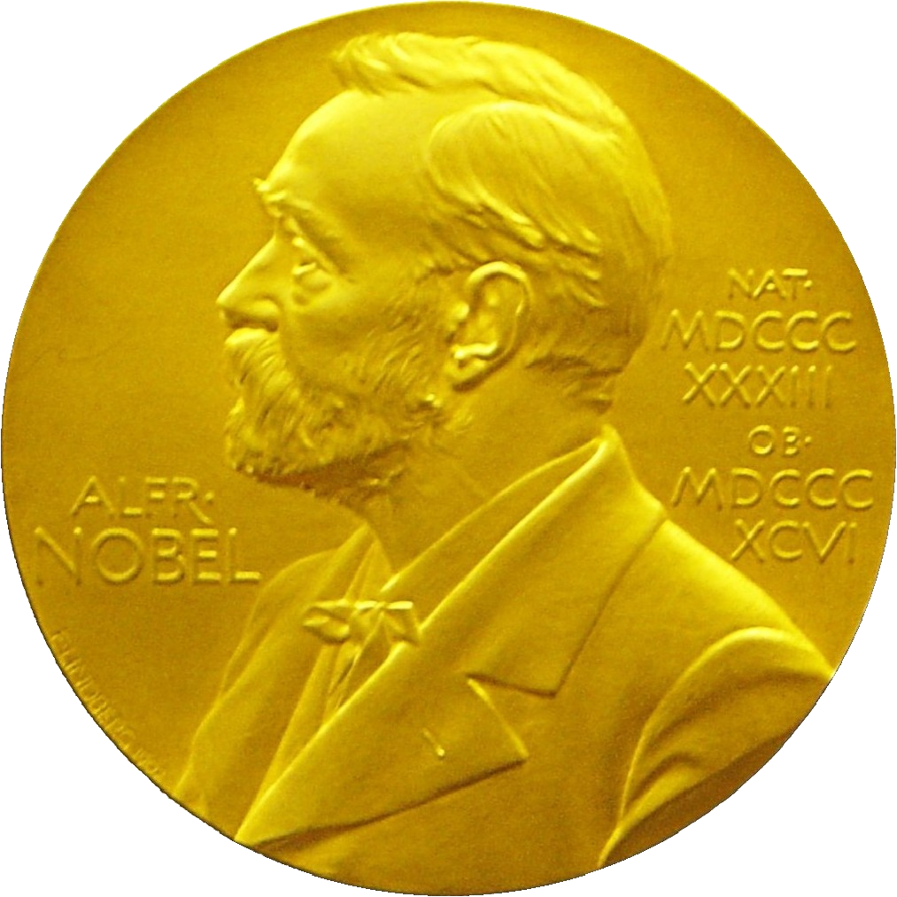

2023 Nobel Prize

2023诺贝尔生理学及医学奖
颁发时间：2023年10月2日
获奖者：Katalin Kariko（匈牙利）、Drew Weissman（美国）。
“在核苷酸修饰方面的发现 ，从而开发出有效的 mRNA 疫苗来对抗 COVID-19疫情”
解释：将机体外mRNA加以修饰，使其被机体识别为自己的mRNA，从而减少炎症反应并且提高蛋白质生产产量，生产出更多的抗体对抗病毒。
解释来自虚拟国联盟
2023诺贝尔物理学奖
颁发时间：2023年10月3日
获奖者：Pierre Agostini（美国）、Ferenc Krausz（匈牙利-奥地利）、Anne L’Huillier（瑞典）。
“产生阿秒光脉冲以研究物质中电子动力学的实验方法”
解释：阿秒是时间计量单位，极短，是科学家目前能测量的最短的时间。他们创造了极短的电子脉冲来帮助深入研究电子动力学，包括研究电子运动状态和能量变化。
解释来自虚拟国联盟
2023诺贝尔化学奖
2023诺贝尔文学奖
2023诺贝尔和平奖
2023诺贝尔经济学奖